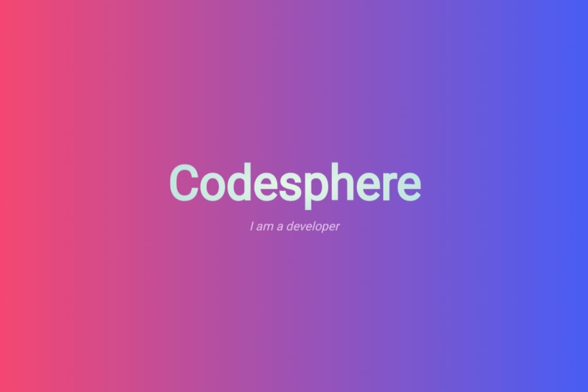

Tubes Arsijarkom
Perangkat akhir
Atau yang biasa disebut End Device. End Device atau perangkat akhir adalah perangkat keras yang mendukung web yang berfungsi sebagai sumber atau tujuan data yang ditransfer melalui jaringan. Pada Cisco Packet Tracer, end devices adalah perangkat yang berada di ujung jaringan dan menjadi pengirim atau penerima pada simulasi jaringan.


